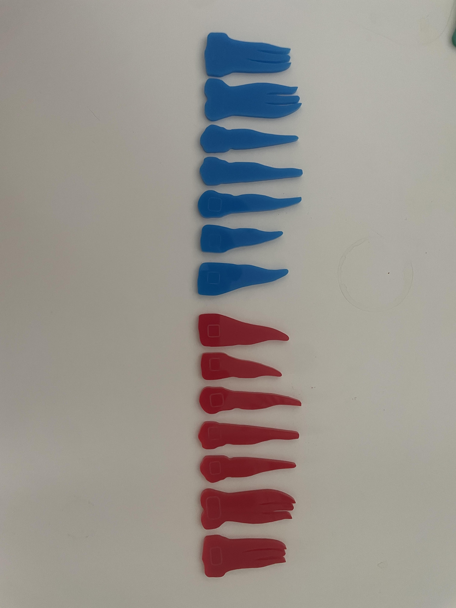

Instrukcje:
-
Kliknij "Automatycznie wykryj zęby", aby program automatycznie
wykrył i wyciął zęby z obrazu
-
Sprawdź wyniki i w razie potrzeby dostosuj parametry wykrywania
-
Kliknij "Pobierz wszystkie obrazy", aby zapisać wycinki zębów do
folderu images

Wykryte zęby